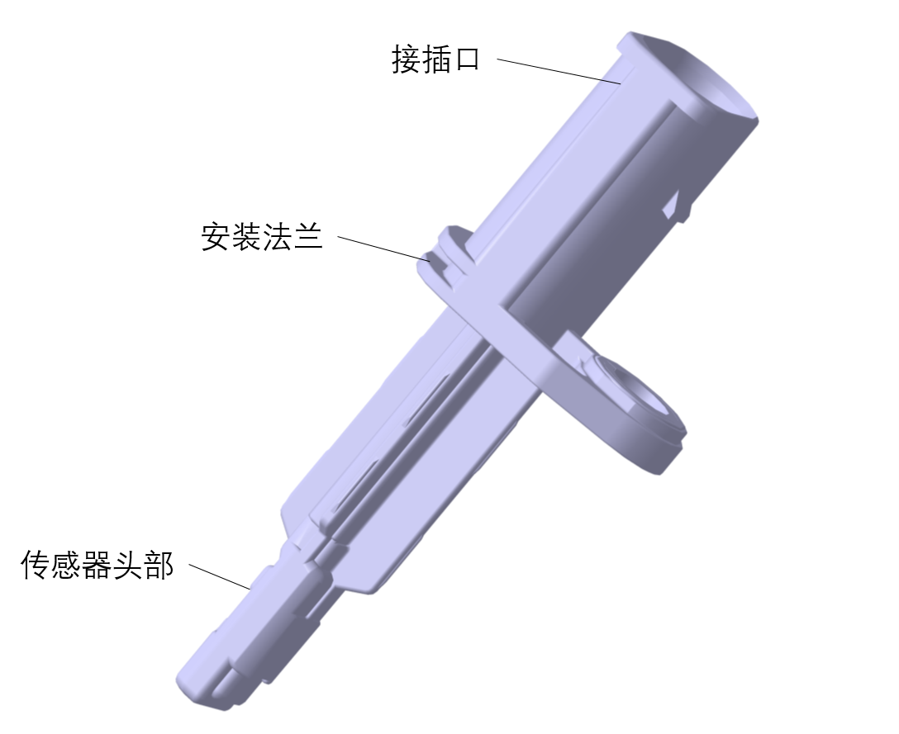
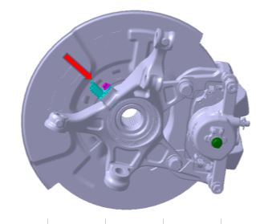
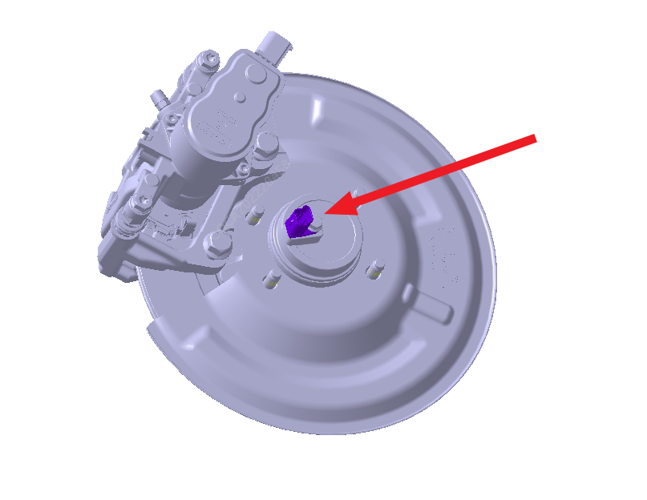
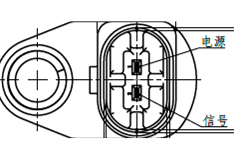
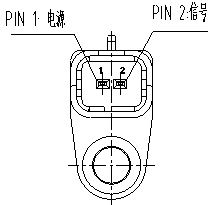

Функция: в основном используется в системах ABS (антиблокировочной) и ESP (также называемой ESC, системой курсовой устойчивости) автомобилей для измерения скорости вращения колес.
Принцип работы: основан на явлении изменения электрического сопротивления некоторых металлов или полупроводников под воздействием внешнего магнитного поля (магниторезистивный эффект); при подаче определенного Рабочее напряжение на выходе формируется изменяющийся сигнал тока.
Конструкция изделия:

Компоновка передних колес:

Компоновка задних колес:

Назначение контактов разъема 1 датчика частоты вращения колеса в сборе (для задних колес, номер детали: 3550050-MK02/MK03):

Назначение контактов разъема 2 датчика частоты вращения колеса в сборе (для передних колес, номер детали: 3550030-MK02/MK03):
